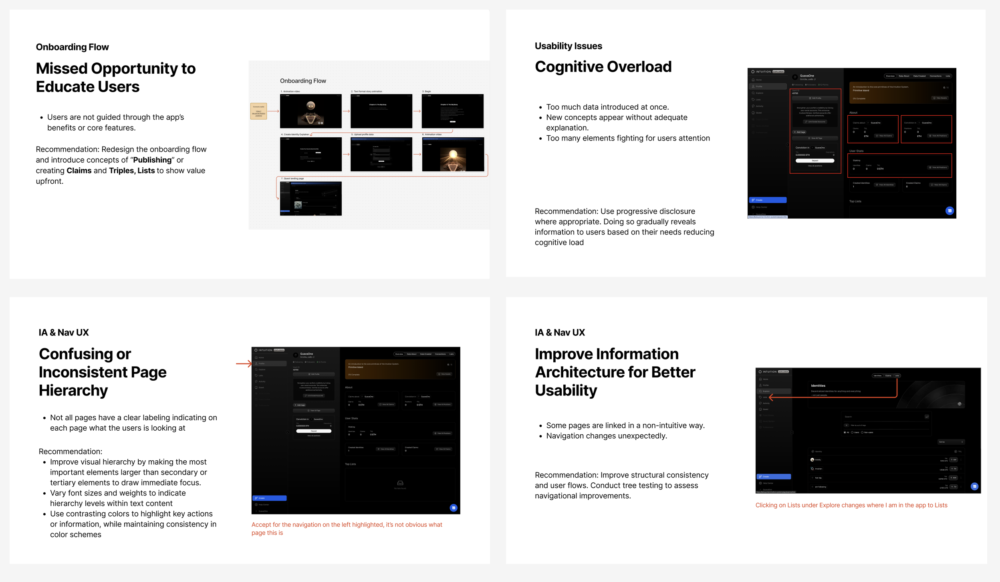
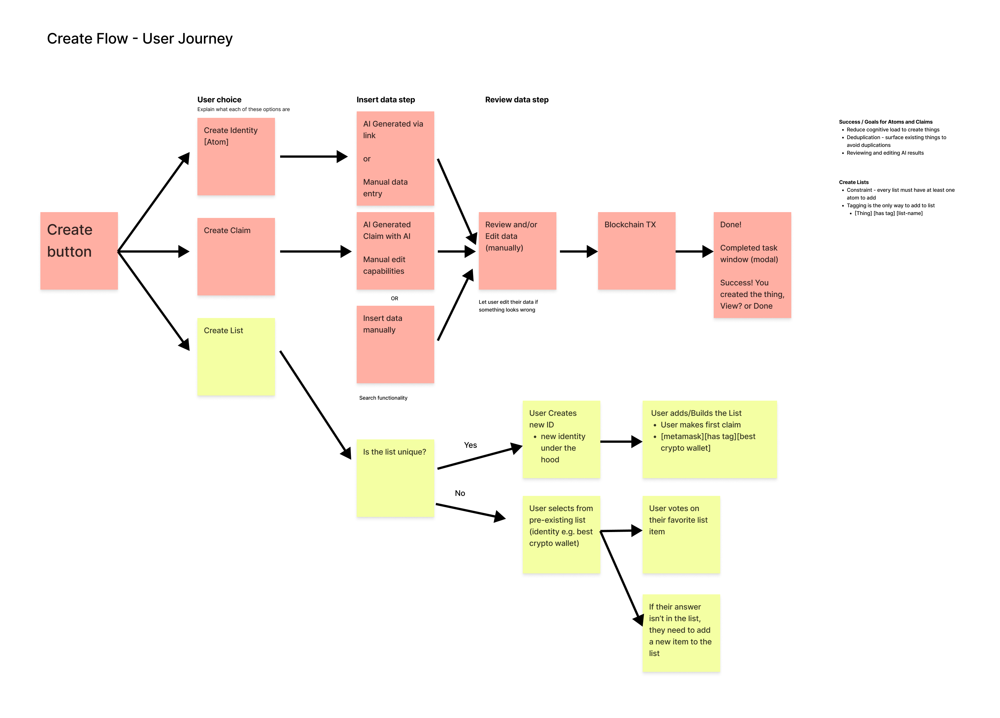
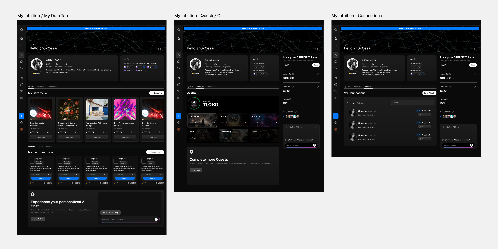
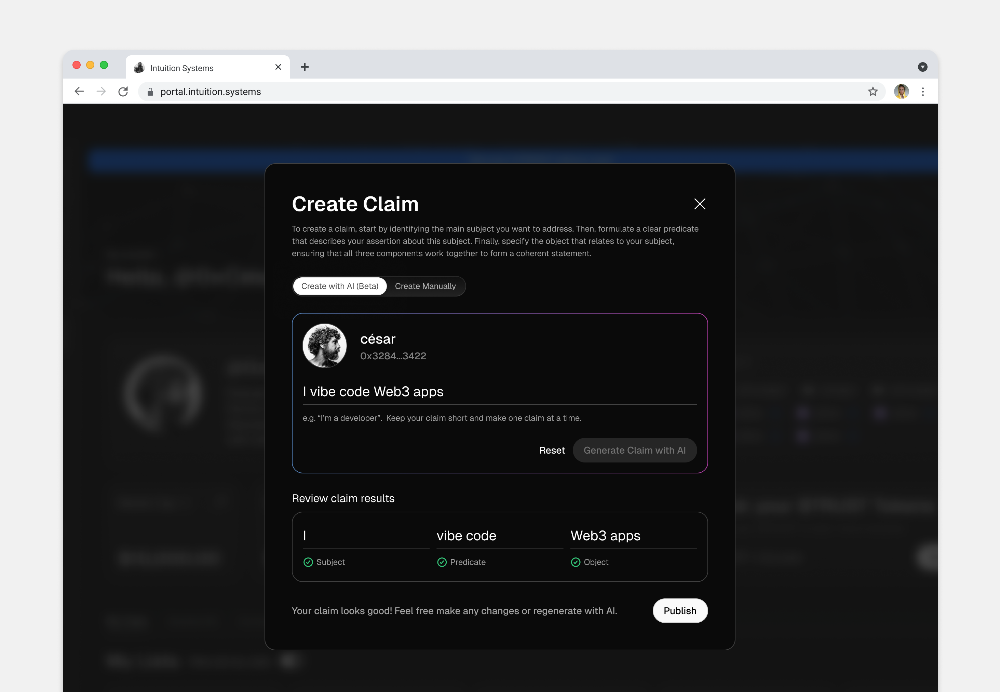
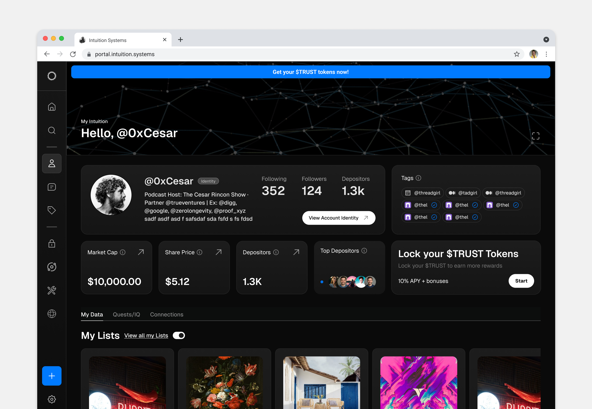

Overview
At the start of 2025, I joined Intuition as Lead Product Designer to help the team unify a series of failed experiments into one flagship product. Their first attempt, Portal, had been confusing, overloaded, and lacked a clear value proposition. With no strategy or roadmap in place, my role was to bring clarity, focus, and design leadership to shape a cohesive experience. The goal was simple: turn scattered ideas into a product users could actually understand and love.
The Problem
Intuition is building a knowledge network where people can make claims about anything — ideas, facts, opinions — and the community can support or challenge those claims by investing in them using crypto. As more users engage, each claim's credibility and value evolve based on collective participation.
Before I joined, the team had explored many experimental ways to bring this concept to life, but none had gained traction. Their first flagship app, Portal, was overloaded with data, confusing to use, and failed to communicate why this system of claims and investments mattered. I was brought in to help the team define a clear product direction, simplify the experience, and design a flagship product that made Intuition's vision understandable and engaging to everyday users.

The Solution
I partnered with the team to define and design a new flagship experience — one product that would distill their vision into something clear, useful, and intuitive. My role was to:
- Audit past experiments and identify what (if anything) worked
- Run workshops with the team to align on a product north star
- Design a simplified, intuitive user experience that delivered value from the first session
This shift allowed us to move from fragmented experiments toward a cohesive, user-centered product.



The Impact
By reframing the product vision and grounding it in design strategy, we were able to:
- Transform a collection of scattered ideas into one coherent flagship experience
- Create clarity for the team around priorities and roadmap
- Deliver a product direction that felt both achievable and exciting
- Position Intuition for stronger user adoption than previous failed launches
The result wasn't just a redesigned product — it was a reset for the team, giving them the foundation they needed to finally build something that resonated.
